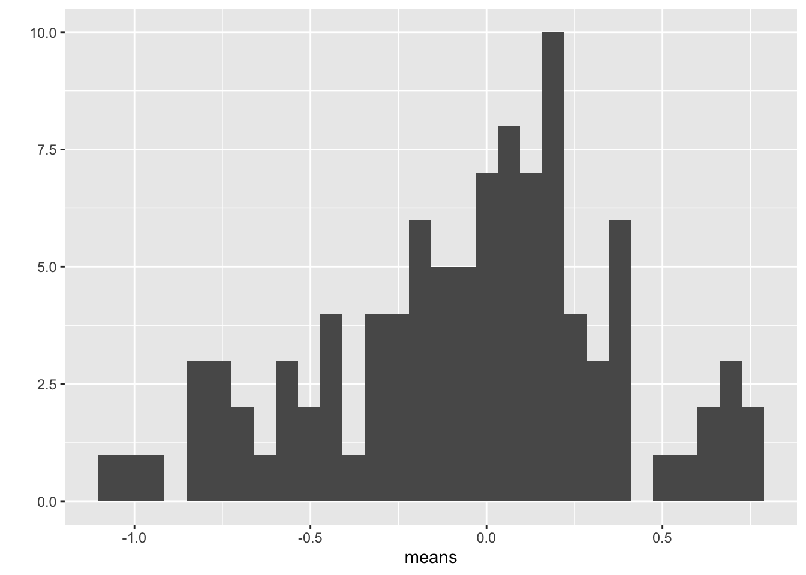

Chapter 2 Analyzing experimental data with a linear model
2.1 This text is about the estimation of treatment effects and the uncertainty in our estimates using linear models. This, raises the question, what is “an effect”?
Following this chapter, I include a completed R Markdown document for a set of experiments exploring the consequences of adispose-tissue specific deletion of the ASK1 signaling protein on multiple, adverse effects of a high-fat diet in mice, including weight gain, glucose intolerance, and increased liver triacylglycerol levels. Think of this as a template for organizing your own R Markdown documents. This document is a re-analysis of the experiments in Figure 2 in the article ASK1 inhibits browning of white adipose tissue in obesity, including generation of the publication-ready plots. I chose the data in Figure 2 of this paper because of the diversity of analyses and plot types. My analyses and plots differ slightly from those of the researchers because I implemented better practices – the stuff of this text.
The goal of the experiments is to measure the effect of the adipose-specific ASK1 deletion. To understand what I mean by “an effect”, and to understand how we can estimate an effect by fiting a linear model to data, let’s look more closely at the analysis for Figure 2i.
For Figure 2i, the researchers want to know if “knocking out” the ASK1 gene in the adipose tissue cells lowers the liver triglyceride (TG) level in mice fed a high-fat diet. That is, is \(\overline{y}_{ASK1Δadipo} < \overline{y}_{ASK1F/F}\), where \(\overline{y}_{ASK1Δadipo}\) is the mean liver TG level of the knockout (Δ is the del operator and refers to a deletion in genetics) mice and \(\overline{y}_{ASK1F/F}\) is the mean liver TG level of the control mice. The difference in the means, \(\overline{y}_{ASK1Δadipo} - \overline{y}_{ASK1F/F}\), is the effect (of ASK1 deletion on liver TG levels).
The measured means in each group are computed from a random sample of mice. If we only cared about the six mice in each group in this experiment, then we would not need to fit a linear model to the data to estimate the effect, we could simply compute each group mean and subtract the control mean from the knockout mean. But we care more about these dozen mice because we are trying to discover something general about ASK1 regulation of TG levels in mice, generally (and even in mammals, and especially humans, generally). To make this leap of inference, we use a model to claim that each sample mean is an estimate of the respective population mean. Given this model, we can compute the standard error of each mean and the standard error of the difference in means. A standard error is a measure of the sampling variance of a statistic and, therefore, a measure of the precision of the estimate. The standard error, then, is a measure of uncertainty in the estimate. Here is how to think about precision and uncertainty: if we were to repeat this experiment many, many times, we would generate a long list of mean TG levels for the control mice and a long list of mean TG levels for the knockout mice. The less variable the means in each list, the more precise. By using a model, we do not need to repeat this experiment many times to get a standard error.
The model we are going to fit to the Figure 2i data is
\[\begin{align} y_i &= \beta_0 + \beta_1 x_i + \varepsilon_i\\ \varepsilon_i &\sim N(0, \sigma^2) \end{align}\]
This is a model of how the Figure 2i data were generated. In this model, \(y_i\) is the liver TG level for some fictional (generated!) mouse (the i stands for the ith fictional mouse generated) and \(x_i\) is a variable that indicates the condition of the ask1 gene in ficitional mouse i. For \(x_i\), a value of 0 is given to mice with a functional ASK1 gene and a value of 1 is given to mice with a knocked out gene.
\(\beta_0\) is the “true” mean of the TG level in mice fed a high-fat diet and with a functional ASK1 gene. By “true”, I mean the mean that would be computed if we were to measure TG on an infinite number of these mice. The observed mean of the ASK1F/F group is an estimate of \(\beta_0\). The sum \(\beta_0\) + \(\beta_1\) is the true mean of the TG level in mice fed a high-fat diet but with a knocked out ASK1 gene. This means that \(\beta_1\) is the true difference in the means, or the true effect. The observed difference in means between the ASK1Δadipo and ASK1F/F groups is an estimate of \(\beta_1\). This difference is the estimated effect.
Notice that the sum \(\beta_0 + \beta_1 x_i\) equals the true mean of the infinite set of normal mice if \(x_i = 0\) and equals the true mean of the infinite set of ASK1 knockout mice if \(x_i = 1\). \(\varepsilon_i\) is the error for mouse i, which is the difference between the TG level for mouse i and the expected TG value for mouse i. The expected value for a mouse with a normal ASK1 gene is \(\beta_0\). The expected value for a mouse with a knocked out ASK1 gene is \(\beta_0 + \beta_1\). The second line of the model simply states that \(\varepsilon_i\) is modeled as a random sample from a normal distribution with a mean of zero and a variance of \(\sigma^2\).
By fitting a model to the data we estimate the parameters \(\beta_0\), \(\beta_1\) and \(\sigma\). It is the estimation of \(\sigma\) that allows us to compute a measure of our uncertainty (a standard error) of our estimates of the means (\(\beta_0\) and \(\beta_0 + \beta_1\)) and of the difference in the means (\(\beta_1\)).
Let’s fit this model to the Figure 2i data using R
Robust inference from the model (generalizing from sample to population, including measures of the uncertainty of our estimates) requires that our data approximates the kind of data we’d expect from the data generating model specified above. All rigorous analysis should use specific model checks to evaluate this. First, the “normality check” – we use a quantile-quantile (QQ) plot to see if our data approximate what we’d see if we sampled from a normal distribution. This looks okay, in the sense that the observed data points (open circles) fall within the boundaries set by the dashed line. Inference is pretty robust to moderate departure from normal.

Second, the “homogeneity check” – we use a spread level plot to see if there is some pattern to the variance, for example if the spread of residuals is noticeably bigger in one group than another, or if the spread increases with the fitted value. This looks pretty good. Given these checks, lets move on and look at the table of model coefficients

##
## Suggested power transformation: 1.294553fig_2i_m1 <- lm(liver_tg ~ treatment, data = fig_2i)
fig_2i_m1_coef <- cbind(coef(summary(fig_2i_m1)),
confint(fig_2i_m1))
knitr::kable(fig_2i_m1_coef, digits = c(1, 2, 1, 3, 1, 1))| Estimate | Std. Error | t value | Pr(>|t|) | 2.5 % | 97.5 % | |
|---|---|---|---|---|---|---|
| (Intercept) | 61.5 | 4.98 | 12.3 | 0.000 | 50.4 | 72.6 |
| treatmentASK1Δadipo | -21.6 | 7.05 | -3.1 | 0.012 | -37.3 | -5.9 |
The two values in the column “Estimate” are the estimates of \(\beta_0\) and \(\beta_1\). The top value (61.5) is the mean of the control mice (the units are µmol/g). The mean of the knockout mice is the sum of the two values (39.9 µmol/g). And the effect of ASK1 deletion on TG levels is simply the second value (-21.6 µmol/g). The standard error of the effect is 7.05 µmol/g. We can use the standard error to compute a t-value (-3.1, in the column “t value”). A t-value is a test statistic. The probability (“p value”) of the significance test is 0.012. This if the probability of sampling a t-value as large or larger than the observed t-value, if we were to sample from a null distribution of t-values (a distribution of sampled t values if the true value of \(\beta_1\) was 0). We can also use the standard error to compute a 95% confidence interval of the effect. The lower bound of this interval is -37.3 µmol/g and the upper bound is -5.9 µmol/g. A confidence interval is another way of communicating uncertainty, and the way advocated in this text. In a 95% confidence interval, 95% of similarly constructed intervals (from hypothetical sampling of six mice from the ASK1 normal population and six mice from the ASK1 knockout population) will contain the true mean. Another way to think about a confidence interval is, it is the range of true differences that are compatible with the data, where compatible means “not rejected” by a t-test (a t-test between the estimated effect and any number inside the interval would return a p-value greater than 0.05).
Here is how we might report this result in a paper:
Mean TG level in ASK1Δadipo mice on a high-fat diet was 21.6 µmol/g less than that in ASK1F/F mice on a high-fat diet (95% CI: -37.3, -5.9, \(p = 0.012\)).
An a plot for the paper:
fig_2i_m1_emm <- emmeans(fig_2i_m1, specs = "treatment")
fig_2i_m1_pairs <- contrast(fig_2i_m1_emm,
method = "revpairwise") %>%
summary(infer = TRUE)
fig_2i_m1_emm_dt <- summary(fig_2i_m1_emm) %>%
data.table
fig_2i_m1_pairs_dt <- data.table(fig_2i_m1_pairs)
fig_2i_m1_pairs_dt[ , p_pretty := pvalString(p.value)]
fig_2i_m1_pairs_dt[, group1 := 1]
fig_2i_m1_pairs_dt[, group2 := 2]
fig_2i_gg <- ggplot(data = fig_2i,
aes(x = treatment,
y = liver_tg,
color = treatment)) +
# points
geom_sina(alpha = 0.5) +
# plot means and CI
geom_errorbar(data = fig_2i_m1_emm_dt,
aes(y = emmean,
ymin = lower.CL,
ymax = upper.CL,
color = treatment),
width = 0
) +
geom_point(data = fig_2i_m1_emm_dt,
aes(y = emmean,
color = treatment),
size = 3
) +
# plot p-values (y positions are adjusted by eye)
stat_pvalue_manual(fig_2i_m1_pairs_dt,
label = "p_pretty",
y.position=c(95),
tip.length = 0.01) +
# aesthetics
ylab("Liver TG (µmol per g liver)") +
scale_color_manual(values=pal_okabe_ito[5:6],
name = NULL) +
theme_pubr() +
theme(legend.position="none") +
theme(axis.title.x=element_blank()) +
NULL
fig_2i_gg